Resposta.
epsilon=1e-3;
A=[1 -1 0 0 0; -1 2 -1 0 0; 0 -1 (2+epsilon) -1 0; 0 0 -1 2 -1; 0 0 0 1 -1]
v=[1 1 1 1 1]’
xgauss=gauss([A v])
function x=q_Jacobi()
x0=[0 0 0 0 0]’
i=0
controle=0
while controle<3 & i<1000
i=i+1
x(1)=1+x0(2)
x(2)=(1+x0(3)+x0(1))/2
x(3)=(1+x0(2)+x0(4))/(2+epsilon)
x(4)=(1+x0(3)+x0(5))/2
x(5)=x0(4)-1
delta=norm(x-x0,2)
if delta<1e-6 then
controle=controle+1
else
controle=0
end
mprintf(’i=%d, x1=%f, x5=%f, tol=%.12f\n’,i,x(1),x(5),delta)
x0=x;
end
endfunction
function x=q_Gauss_Seidel()
x0=[0 0 0 0 0]’
i=0
controle=0
while controle<3 & i<15000
i=i+1
x(1)=1+x0(2)
x(2)=(1+x0(3)+x(1))/2
x(3)=(1+x(2)+x0(4))/(2+epsilon)
x(4)=(1+x(3)+x0(5))/2
x(5)=x(4)-1
delta=norm(x-x0,2)
if delta<1e-2 then
controle=controle+1
else
controle=0
end
mprintf(’i=%d, x1=%f, x5=%f, tol=%.12f\n’,i,x(1),x(5),delta)
x0=x;
end
endfunction

E 4.6.2. Resolva o seguinte sistema pelo método de Jacobi e Gauss-Seidel:
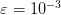 Use como critério de paragem tolerância inferior a 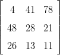 e inicialize com
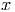.
E 4.6.4. Considere o seguinte sistema de equações lineares:
Construa a iteração para encontrar a solução deste problema pelos métodos de
Gauss-Seidel e Jacobi. Usando esses métodos, encontre uma solução aproximada
com erro absoluto inferior a 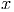.
Resposta. 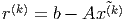, 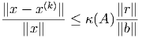, 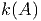, 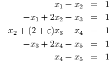, , , , 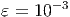, 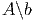,
, 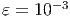
Exemplos de rotinas:
function x=jacobi()
x0=zeros(11,1)
k=0;
controle=0;
while controle<3 & k<1000
k=k+1
x(1)=x0(2)
for j=2:10
x(j)=(cos(j/10)+x0(j-1)+x0(j+1))/5
end
x(11)=x0(10)/2
delta=norm(x-x0) //norma 2
if delta<1e-5 then
controle=controle+1
else
controle=0;
end
mprintf(’k=%d, x=[%f,%f,%f], tol=%.12f\n’,k,x(1),x(2),x(3),delta)
x0=x;
end
endfunction
function x=gs()
x0=zeros(11,1)
k=0;
controle=0;
while controle<3 & k<1000
k=k+1
x(1)=x0(2)
for j=2:10
x(j)=(cos(j/10)+x(j-1)+x0(j+1))/5
end
x(11)=x0(10)/2
delta=norm(x-x0) //norma 2
if delta<1e-5 then
controle=controle+1
else
controle=0;
end
mprintf(’k=%d, x=[%f,%f,%f], tol=%.12f\n’,k,x(1),x(2),x(3),delta)
x0=x;
end
endfunction
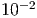
 .
.
 com 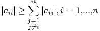 usando Gauss-Seidel com
tolerância 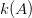. Compare o resultado com o resultado obtido no item
d.
com 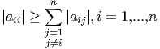 usando Gauss-Seidel com
tolerância 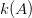. Compare o resultado com o resultado obtido no item
d.